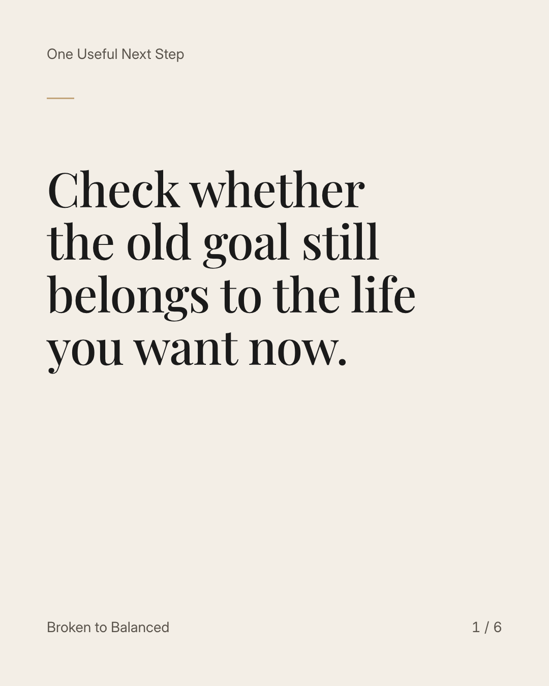
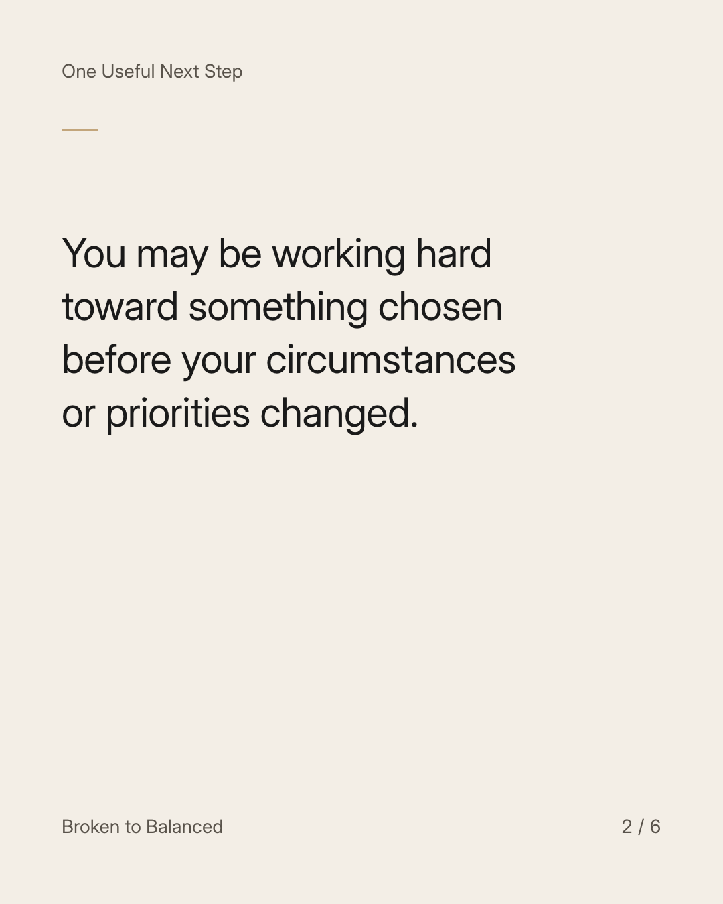
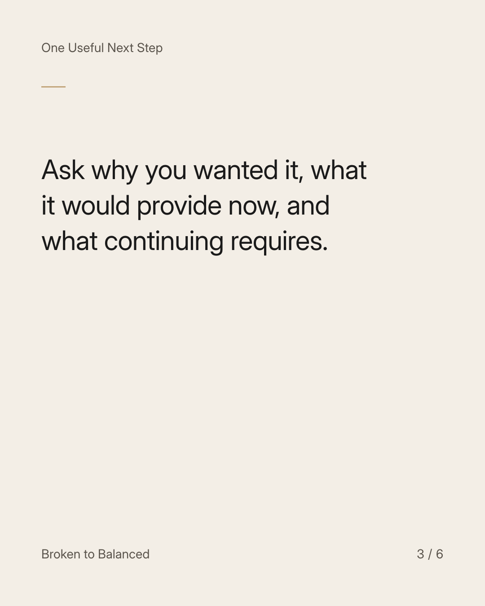
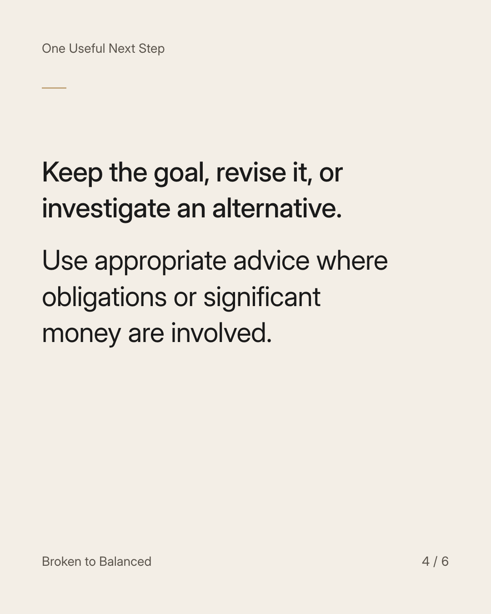
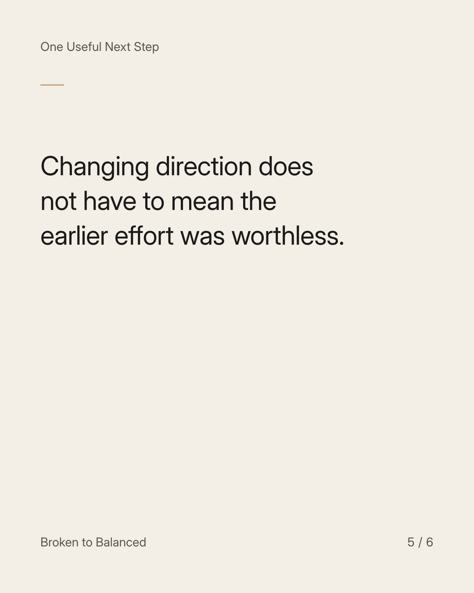
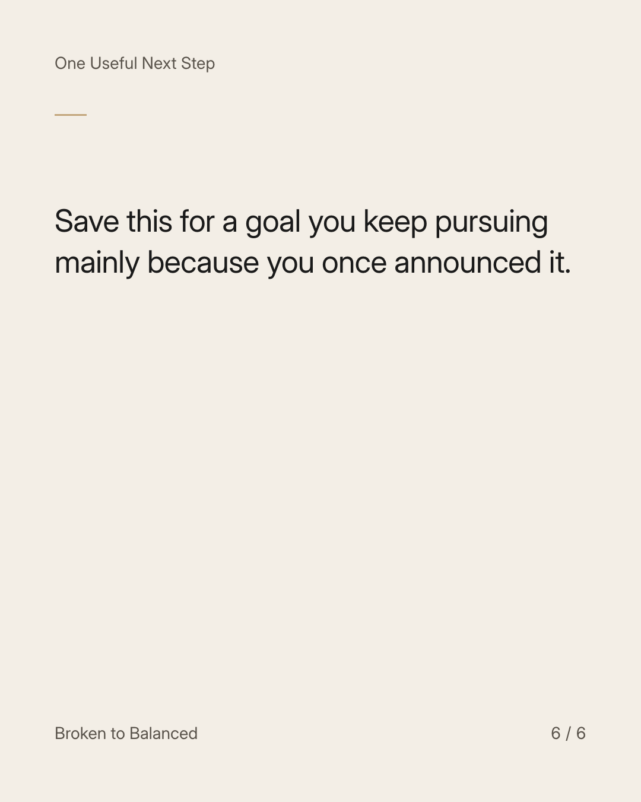

Exact text and accessibility text
Check whether the old goal still belongs to the life you want now.
Slide 1 of 6. Check whether the old goal still belongs to the life you want now.


Exact text and accessibility text
You may be working hard toward something chosen before your circumstances or priorities changed.
Slide 2 of 6. You may be working hard toward something chosen before your circumstances or priorities changed.


Exact text and accessibility text
Ask why you wanted it, what it would provide now, and what continuing requires.
Slide 3 of 6. Ask why you wanted it, what it would provide now, and what continuing requires.


Exact text and accessibility text
Keep the goal, revise it, or investigate an alternative. Use appropriate advice where obligations or significant money are involved.
Slide 4 of 6. Keep the goal, revise it, or investigate an alternative. Use appropriate advice where obligations or significant money are involved.


Exact text and accessibility text
Changing direction does not have to mean the earlier effort was worthless.
Slide 5 of 6. Changing direction does not have to mean the earlier effort was worthless.


Exact text and accessibility text
Save this for a goal you keep pursuing mainly because you once announced it.
Slide 6 of 6. Save this for a goal you keep pursuing mainly because you once announced it.
Exact caption
Plain-text fallback: select and copy the caption.